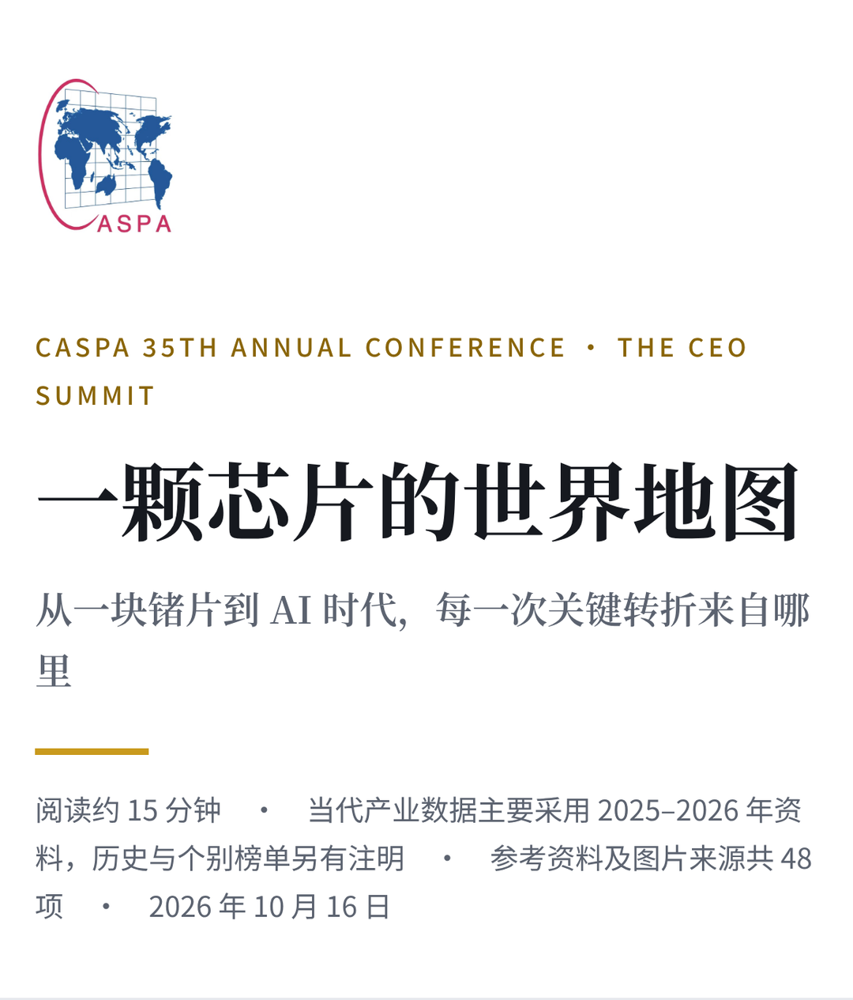
你手里的手机里，有一颗指甲盖大小的东西。
把它从一片硅做成能用的芯片，要走过 1,000 到 1,500 道工序；成品送到最终客户手里之前，可能已经跨过国境 70 次以上，零部件走过的路程超过 25,000 英里。1 没有哪个国家能独自完成这件事。
这条漫长的链，此刻正处在历史上最热的时候。2026 年 8 月，全球半导体销售额达到 1,597 亿美元（三个月移动平均），比去年同期增长 144.3%；从年初到 8 月底，累计销售额首次突破 1 万亿美元，全年预计将超过 1.6 万亿美元。2 作为对照，整个 2025 年的销售额是 7,956 亿美元。3
按这个预期，2026 年全年的规模，将超过 2025 年的两倍。这样的行情从哪里来？在每一个板块上，又是谁把它一步一步推到了今天？
先看全貌。理解这个产业，可以从七个关键板块入手，每个板块都有各自的主角。
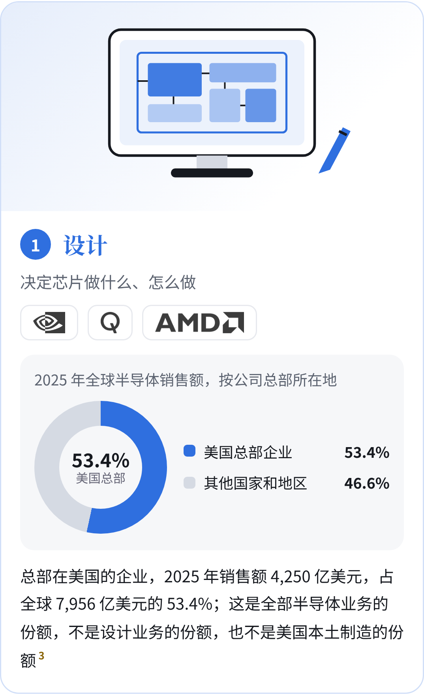
图03 板块 1：设计
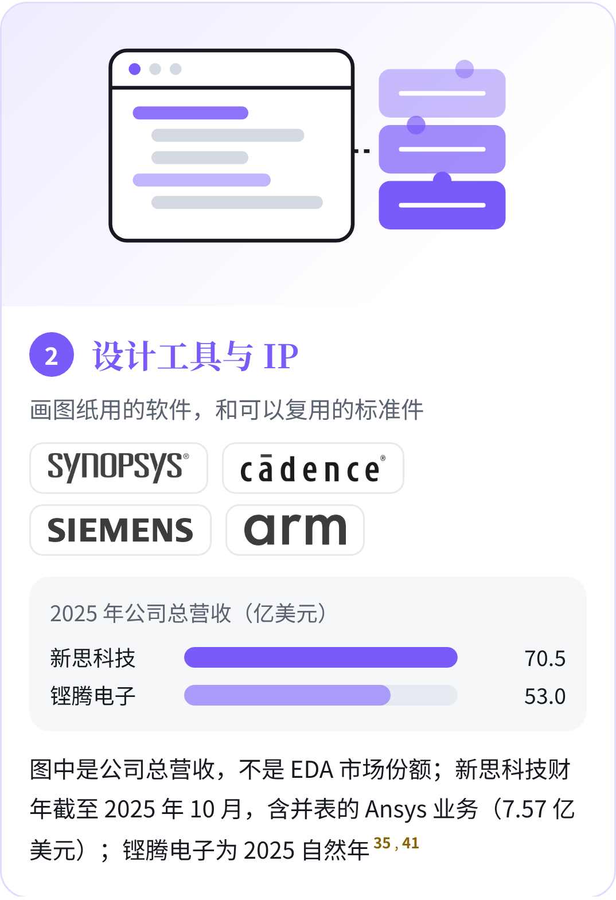
图04 板块 2：设计工具与 IP
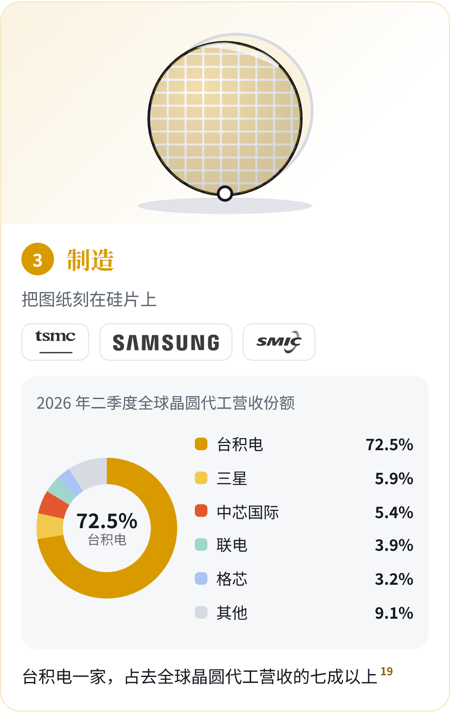
图05 板块 3：制造
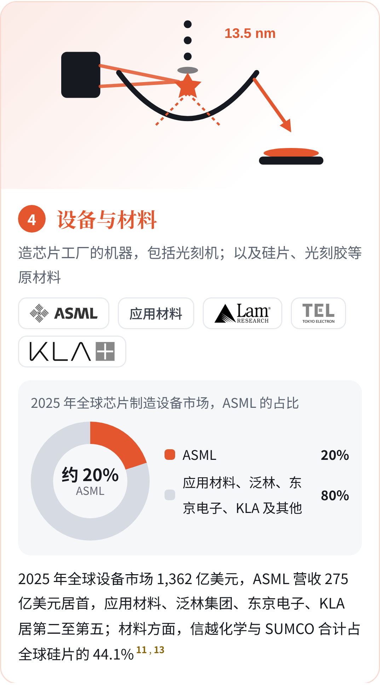
图06 板块 4：设备与材料
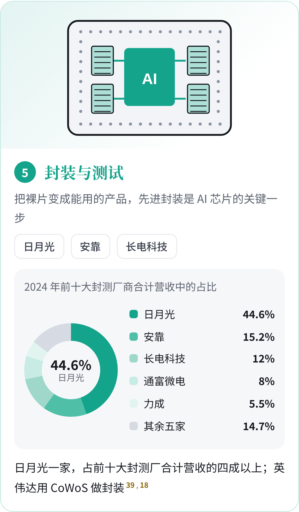
图07 板块 5：封装与测试
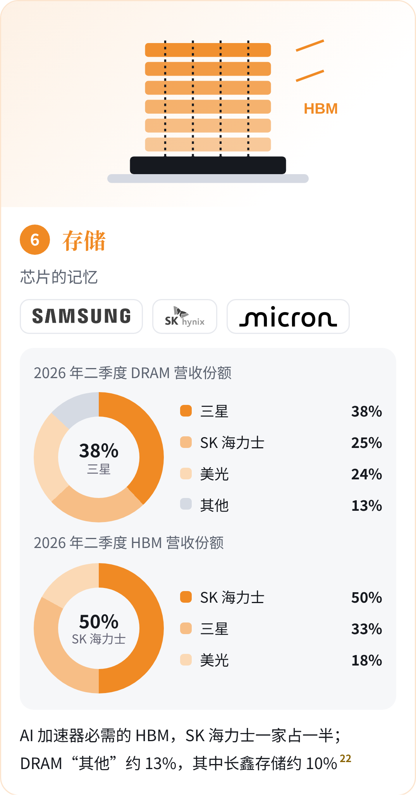
图08 板块 6：存储
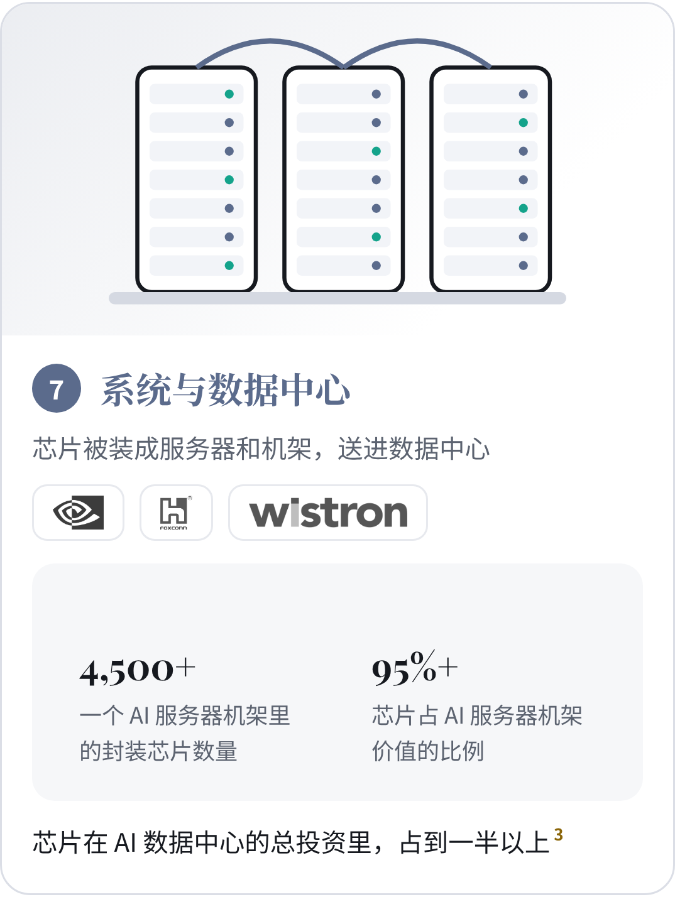
图09 板块 7：系统与数据中心
这些主角不是同时出现的。从 1947 年到今天，八个关键节点，一步一步，把分工推成了现在的样子。
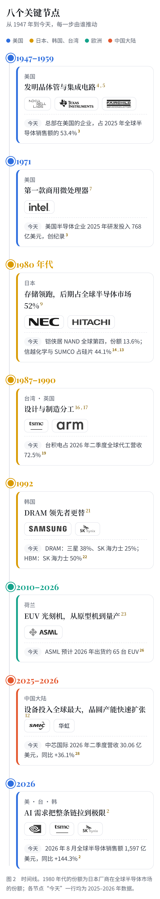
图10 八个关键节点：从 1947 年到今天，每一步由谁推动
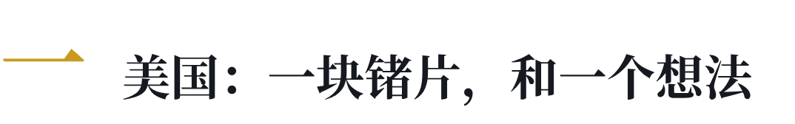
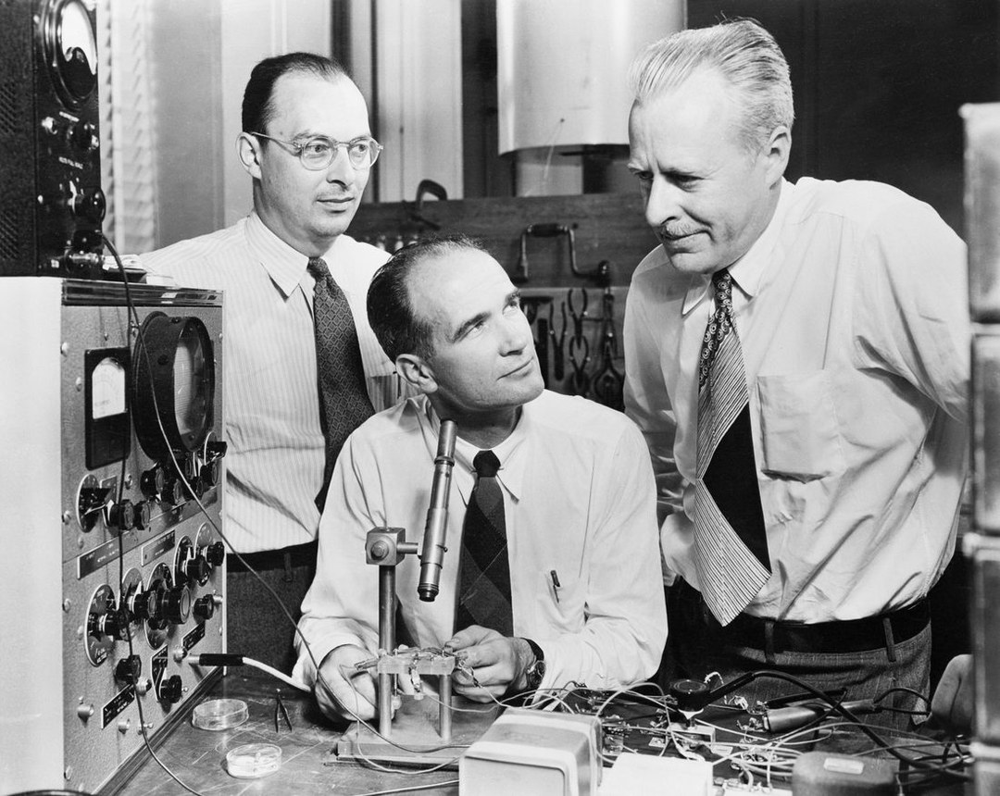
图12 巴丁、肖克利、布拉顿，晶体管的三位发明者，贝尔实验室。AT&T 新闻照片，公有领域 [40]
故事从美国新泽西州默里山（Murray Hill）的贝尔实验室开始。1947 年 12 月 23 日，物理学家约翰·巴丁（John Bardeen）和沃尔特·布拉顿（Walter Brattain）向实验室展示了第一个固态放大器。后来，肖克利（William Shockley）、巴丁和布拉顿三个人共同获得了 1956 年的诺贝尔物理学奖。4
晶体管是一个极小的开关。可是一个电路要用到的元件越来越多，把它们一个一个做好再连起来，既慢又不可靠。于是下一个问题出现了：能不能把这些元件，直接做在同一块半导体里？
1958 年 7 月，德州仪器（Texas Instruments）的杰克·基尔比（Jack Kilby）想出了“单片”的主意。1959 年 2 月，他的专利申请里写着：电路的所有元件，都完全集成在半导体材料的本体里。差不多同一时间，仙童半导体（Fairchild Semiconductor）的研究主管罗伯特·诺伊斯（Robert Noyce）在 1959 年 1 月的实验室笔记里写下：“在同一块硅片上做出多个器件，是值得追求的。”5
集成电路的想法，就这样在不到一年的时间里，被两家美国公司先后想到。
接下来是节奏。1965 年 4 月 19 日，戈登·摩尔（Gordon Moore）在《电子学》（Electronics）杂志上发表了一篇四页的文章，预测在成本最低的条件下，单个集成电路上可以集成的元件数量，大约每年翻一番；十年后的 1975 年，他把节奏修订为大约每两年翻一番。6,47 这就是后来人人都知道的“摩尔定律”。
1968 年，摩尔和诺伊斯共同创办了英特尔（Intel）。6 1971 年 11 月 15 日，英特尔的 4004 上市，被吉尼斯世界纪录认定为第一款商用微处理器，里面有 2,300 个晶体管；它由英特尔的费德里科·法金（Federico Faggin）、斯坦利·马佐尔（Stanley Mazor）、特德·霍夫（Ted Hoff）与日本商业通信公司（Busicom）的嶋正利（Masatoshi Shima）共同设计。7
也是在 1971 年 1 月 11 日，《电子新闻》（Electronic News）上，唐·赫夫勒（Don Hoefler）的专栏第一次在印刷品里用了“硅谷”（Silicon Valley）这个名字。8
晶体管、集成电路和首款商用微处理器，都诞生在美国的实验室和公司里（微处理器的设计，还有日本 Busicom 工程师的参与）。这股惯性延续到今天：2025 年，总部在美国的半导体企业，销售额达 4,250 亿美元，占全球半导体销售额的 53.4%，是 1984 年以来的最高水平；美国半导体企业当年的研发投入达到 768 亿美元，也是纪录。3
可是，发明者不一定是最后的赢家。
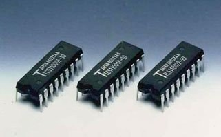
图14 东芝 1M DRAM 芯片，1980 年代。图片来源：日本半导体历史馆 [43]
1970 年代以前，美国凭借对晶体管和集成电路的发明，在半导体行业占据压倒性的地位。70 年代后期，局面开始变化：日本依靠庞大的消费电子市场，在计算机用的存储芯片（DRAM）上越做越强，几乎成了日本的“特长”。1980 年代初，日本厂商的全球份额约 30%；到 80 年代后期，这个数字升到 52%，超过了美国。那是被称为“日本第一”的年代。9
美国公司在这场较量里做出了很痛的选择。1985 年，英特尔决定离开存储芯片业务，决定由安迪·格鲁夫（Andy Grove）和戈登·摩尔共同做出：摩尔的判断是，换一个新老板，也会做同样的事，于是格鲁夫提议，由他们两个人亲手把这件事做了。10
1986 年，美日签订半导体协议，其中的一项目标，是把外国半导体在日本市场的份额从 10% 提高到 20%。9
随后风向又变了。1990 年代，市场的主角变成了个人电脑，微处理器和逻辑芯片的比重超过了存储，英特尔、德州仪器等美国公司在这一领域更有竞争力；同时，专业化分工的半导体公司越来越多，产品和商业模式都在变，日本厂商面对的是双重变化。美国在 1993 年重新超过日本，日本的份额从 50% 以上的峰值，降到了 20% 左右。1999 年，日本电气（NEC）和日立的 DRAM 业务剥离合并，成立了尔必达（Elpida）。9 半导体是一个技术变化极快、市场波动极大的行业，今天的赢家，明天可能就是输家。
但日本没有从这张地图上消失，它退到了上游，并且守住了几个关键的位置。
设备。 东京电子（Tokyo Electron）排在 TechInsights 统计的 2025 年全球芯片制造设备厂商前五名里，同台的是 ASML、应用材料、泛林集团和 KLA。11 2025 年，日本的设备采购额为 95 亿美元，同比增长 22%。12
材料。 日经 2025 年的市场份额调查显示，信越化学和 SUMCO 两家日本公司，合计占全球硅片市场的 44.1%，分别是 26.3% 和 17.8%；在光刻胶领域，排前三位的东京应化、JSR 和信越化学都是日本公司，合计占 60.5%。13
存储。 铠侠（Kioxia）在 2026 年二季度的 NAND 闪存营收约 107 亿美元，份额 13.6%，居全球第四。14
下一步。 日本正在为最前沿的制造押注新的玩家。Rapidus 的目标是在 2027 年量产 2 纳米逻辑芯片，2026 年 2 月 27 日，公司完成总额 2,676 亿日元的融资，其中日本政府经由信息处理推进机构出资 1,000 亿日元，32 家民营企业出资 1,676 亿日元。15
日本退到上游的那些年，行业里还发生着另一件事。它不在存储，而在分工。
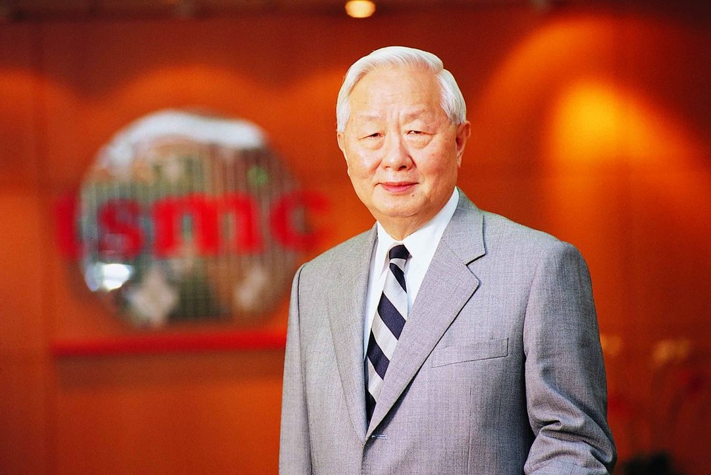
图16 张忠谋，2011 年。图片来源：IEEE 工程与技术史 Wiki [44]
芯片越做越复杂，建一座工厂越来越贵，没有那么多公司既能设计，又建得起厂。
1987 年，台湾积体电路制造公司（TSMC，台积电）成立，创办人是张忠谋（Morris Chang）。台积电自己的说法是，它开创了纯晶圆代工（pure-play foundry）的商业模式，专注于为客户制造产品。16
这个模式的意义，在于把“设计”和“制造”拆开：设计公司不必再自己建厂，只管设计；像台积电这样的纯晶圆代工企业，不替自己做芯片，只替别人做。
同一时期，另一种拆分也在发生。英国的 Arm 成立于 1990 年 11 月，最初是 Acorn Computers、苹果和 VLSI Technology 的合资公司：苹果出资金，VLSI 出工具，Acorn 出 12 位工程师。它的做法，是把处理器设计授权给许多半导体公司，收取一次性授权费，再按产出收取版税。17
分工的结果，在今天最大的 AI 芯片公司身上看得最清楚。英伟达（NVIDIA）在截至 2026 年 1 月 25 日的财年年报里写明：它用台积电和三星电子的晶圆代工产出晶圆，向 SK 海力士、美光和三星采购内存，用 CoWoS 技术做封装，再委托鸿海精密、纬创和 Fabrinet 等承包商做组装、测试和封装。18
制造这一环，集中度惊人。TrendForce 统计，2026 年第二季度全球晶圆代工市场里，台积电的营收约 402 亿美元，份额 72.5%；第二名三星 5.9%，第三名中芯国际 5.4%。19 台积电自己公布的数字显示，同一季度它的晶圆收入中，3 纳米占 30%，5 纳米占 33%，7 纳米占 11%，首次贡献营收的 2 纳米占 3%，7 纳米及更先进的制程合计占 77%。20 TrendForce 的评论是，台积电 5/4 纳米和 3 纳米的产能，被 AI 服务器 GPU 和各类 XPU 的需求订满。19
资金同样往这里涌：2025 年台湾的设备投入达到 315 亿美元，同比增长 90%，是全球增幅最大的地区。12
分工让每一个环节做到极致。接下来，是存储。
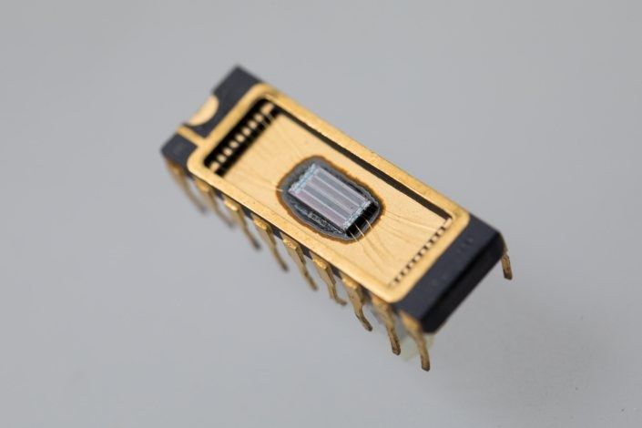
图18 三星半导体事业的起点，是 64Kb DRAM。图片来源：三星新闻中心 [45]
随着日本厂商在 DRAM 领域的优势逐渐减弱，韩国厂商持续扩大着自己的位置。1992 年 8 月，三星电子研发成功 64M DRAM，三星自己的历史记录称之为首款，日本的日立紧随其后。21
三十多年后，存储的版图是这样的。研究机构 Counterpoint 估算，2026 年第二季度全球 DRAM 营收份额中，三星 38%，SK 海力士 25%，美光 24%，其余约 13%，其中中国的长鑫存储（CXMT）约占 10%，南亚科技约 2%，其他约 1%。22 在 AI 加速器必需的 HBM 上，SK 海力士的份额达到 50%，三星 33%，美光 18%。22（HBM 的三项相加为 101%，是四舍五入所致。）NAND 闪存方面，TrendForce 统计，2026 年第二季度前五名的营收合计 688.7 亿美元，环比增长 77%，三星以 29.3% 的份额居首。14
钱也跟着流向了这里。2025 年，韩国的半导体设备投入达到 258 亿美元，同比增长 26%，主要得益于 HBM 和 DRAM 方面依然强劲的投资。12
在 DRAM 这个战场上，美国、日本、韩国先后领跑过。而无论是台湾的代工，还是韩国的存储，最终都要靠同一类机器。
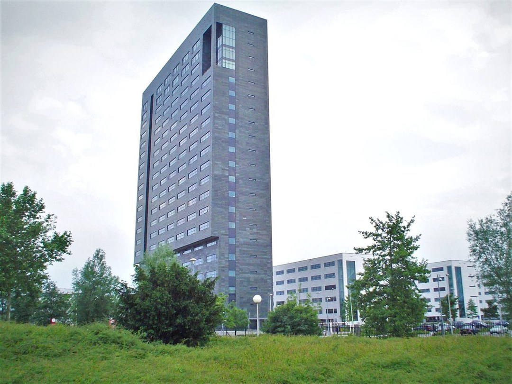
图20 ASML 总部，荷兰费尔德霍芬，2008 年。摄影：A. Ansems，公有领域 [42]
芯片的电路，是用光“刻”到硅片上的。这台设备，叫光刻机。
最先进的一种光刻机，使用极紫外光（EUV）。ASML 的说明是这样的：把约 25 微米大小的熔融锡滴，以每秒 70 米的速度射出；先用一束较弱的激光把锡滴打成“薄饼”，再用一束更强的激光把它气化成等离子体，等离子体发出 EUV 光；这个过程，每秒重复 50,000 次。EUV 光的波长是 13.5 纳米。25
做出这样的机器，用了很长的时间。ASML 成立于 1984 年，由飞利浦（Philips）和 ASM International 合资创办。它在 2010 年交付了第一台 EUV 原型机；2016 年，客户开始批量订购可量产的 NXE:3400；2020 年，EUV 进入大规模量产，ASML 交付了第 100 台 EUV 系统；2023 年，交付了第一台下一代 High-NA（数值孔径 0.55）EUV 系统。23 从原型机到大规模量产，用了十年。ASML 的官方表述是，在这条路上，只有它和它的合作伙伴、供应商，一直坚持到做出了可行的系统。24 今天它的产品线包括标准数值孔径的 NXE:3800E 等型号，以及 High-NA 的 EXE:5200B 和 EXE:5000。24
这台机器的订单，正是行情最直接的投影。ASML 在 7 月 15 日公布，第二季度总净销售额 93 亿欧元，其中 EUV 系统销售 38 亿欧元；系统销售按用途几乎对半分，逻辑芯片占 51%，存储占 49%。公司当时预计，2026 年将出货约 65 台标准数值孔径的 EUV 系统，这股需求来自 DRAM 和先进逻辑；2027 年的低数值孔径 EUV 订单已基本订满，公司计划把产能提高约 30%。26 10 月 14 日，ASML 公布了第三季度的结果：总净销售额 116.6 亿欧元，净利润 49.6 亿欧元，毛利率 57.5%；公司把 2026 年全年的净销售额预期调整为 440 亿至 450 亿欧元，毛利率约 56%，并预计第四季度的净销售额为 142 亿至 152 亿欧元。27
整个设备行业的体量也在放大。TechInsights 统计，2025 年全球芯片制造设备市场达到 1,362 亿美元，同比增长 13%；ASML 以 275 亿美元的营收居首，应用材料、泛林集团、东京电子和 KLA 排在其后，构成前五名。11 另一项统计的口径略有不同：2025 年全球半导体设备销售额为 1,351 亿美元，同比增长 15%。12
到这里可以看到：各地在不同的环节上形成了自己的优势，而整条产业链，要靠彼此协作才转得起来。还有一个国家，正在把更多的环节，同时往前推。
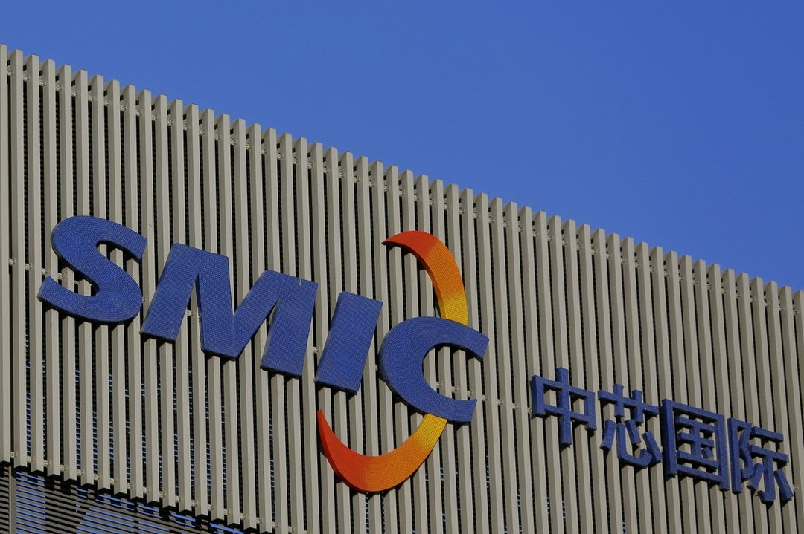
图22 中芯国际厂区外墙。图片来源：凤凰网 [46]
先看钱花在哪里。2025 年，全球半导体设备销售额为 1,351 亿美元，其中中国大陆买下 493 亿美元（这是设备采购额，不等于国产设备企业的销售额），仍是全球最大的设备市场，与上一年基本持平（下降 0.5%）；台湾 315 亿美元，增长 90%；韩国 258 亿美元，增长 26%。三地合计占全球的 79%，2024 年这个比例是 74%。12
再看制造。2026 年第二季度，全球晶圆代工前十名里，有三家来自中国大陆：中芯国际（SMIC）居第三，份额 5.4%，营收超过 30 亿美元，季度增长 20%；华虹集团居第六，营收超过 12.7 亿美元；晶合集成（Nexchip）居第九，营收 4.47 亿美元。19 中芯国际自己的财报显示，2026 年第二季度营收 30.06 亿美元，同比增长 36.1%，毛利率 25.3%；公司预计第三季度营收再增 2% 至 4%，并判断由 AI 带动的行业热度会延续到下半年。28
存储方面，长鑫存储约占 2026 年第二季度全球 DRAM 营收的 10%。22 设备方面，ASML 在 7 月的电话会上预计，2026 年中国市场约占其全年净销售额的 20%，主要来自成熟逻辑制程的需求。26
资金方面，国家集成电路产业投资基金（“大基金”）三期于 2024 年 5 月 24 日成立，注册资本 3,440 亿元；据 2025 年 1 月的报道，当时它向两只子基金合计出资 1,600 亿元。29
外部环境是另一条线。2022 年 10 月 7 日，美国商务部工业与安全局（BIS）发布新规，对某些先进计算芯片和某些半导体制造物项施加了出口管制。30 2026 年 1 月 13 日，BIS 宣布，对英伟达 H200、AMD MI325X 及类似芯片出口到中国的申请，改为逐案审查，申请方需要证明：出口不会减少美国客户可得的全球产能，买方有出口合规程序，产品经过美国第三方的独立测试；这并不等于自动放行。31 不过，英伟达 2026 年 8 月公布三季度指引时，没有计入任何来自中国的数据中心计算收入。32
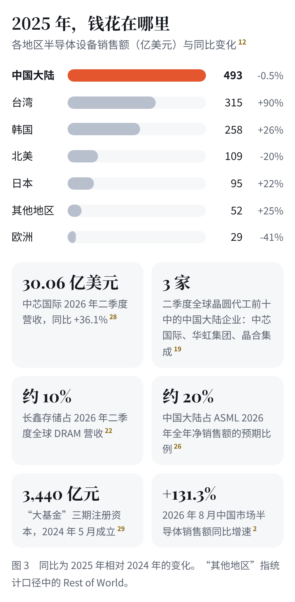
图23 2025 年，各地区半导体设备销售额（亿美元）与同比变化 [12]
市场的另一端，同样热得很快：今年 8 月，中国市场的半导体销售额同比增长 131.3%，美洲增长 180.9%，欧洲 98.5%，日本 62.3%。2（“中国市场的销售额”，指在中国市场卖出的芯片，不等于中国本土企业的销售额。）
这股热度，主要来自 AI。
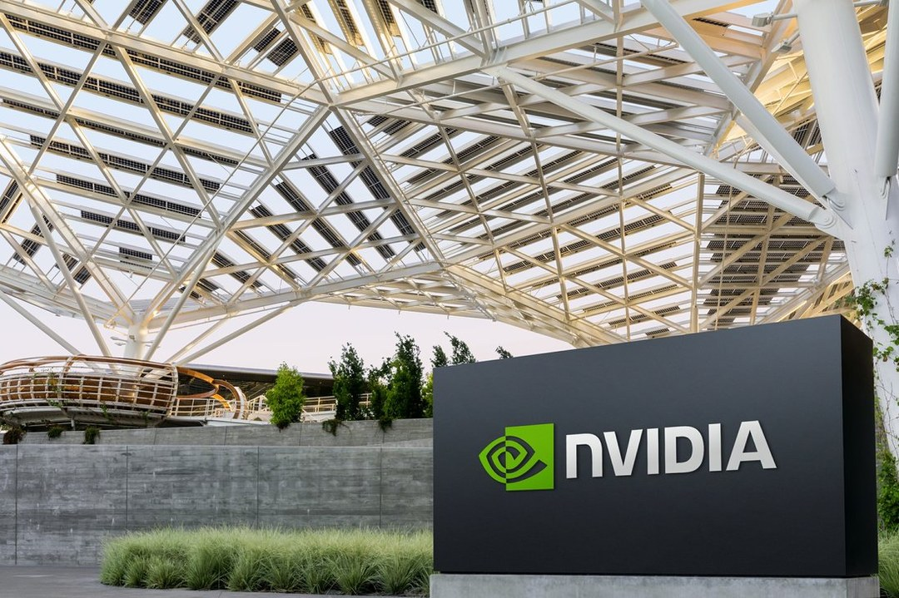
图25 英伟达总部 Voyager 大楼。图片来源：NVIDIA 新闻中心 [32]
先看规模。2026 年第二季度，全球半导体销售额为 4,033 亿美元，比第一季度增长 35.1%。33 把这个增长拆开来看：2026 年上半年全球市场达到 7,020 亿美元，同比增长 102%，其中存储增长 305%，逻辑增长 45%。34 需要说明的是，销售额的增长，既来自出货数量，也来自价格和产品结构的变化，不等于芯片数量按同样的比例增加。
增长最集中的地方，是 AI 的需求。英伟达在 2026 年 8 月公布，截至 7 月 26 日的季度，营收 962 亿美元，同比增长 106%；其中数据中心业务 890 亿美元，同比增长 117%。公司预计下一个季度的营收约 1,080 亿美元。32
这些芯片需要整条链一起配合。一个 AI 服务器机架里，有 4,500 多颗封装好的芯片，芯片占机架价值的 95% 以上。3 而英伟达披露的供应链伙伴，分布在不同的国家和地区：台积电和三星提供晶圆代工，SK 海力士、美光和三星提供内存，CoWoS 是它使用的封装技术，鸿海、纬创和 Fabrinet 等承包商负责组装和测试。18 这是公司整体的披露，并不代表某一个型号的固定生产路线。
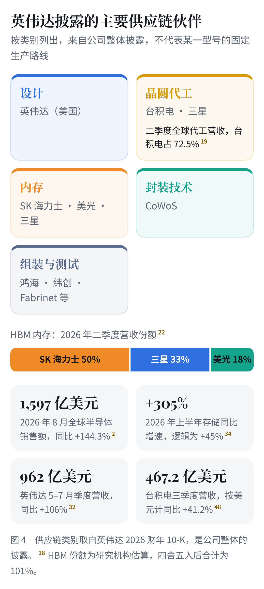
图26 英伟达披露的主要供应链伙伴（公司整体披露，不代表某一型号的固定生产路线）[18]
先进逻辑、HBM 和部分先进封装这些关键的环节，需求格外紧张。台积电 10 月 15 日公布，第三季度营收 467.2 亿美元，按美元计同比增长 41.2%，环比增长 16.2%，对第四季度的指引是 523 亿至 543 亿美元。48 二季度的财报里，公司曾提到 2 纳米产能将“陡峭地爬坡”。20
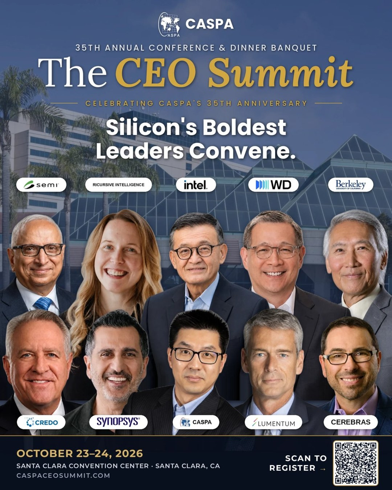
图28 CASPA 第 35 届年会 · The CEO Summit 官方海报
算力、能耗、供电和散热，都是 AI 时代绕不开的问题。本文想谈的，是其中一个切口：芯片与芯片之间。更多的计算单元，需要更及时地拿到数据；内存的容量和带宽、计算与内存之间的搬运，影响着整个系统的表现；多颗芯片、多台服务器、多个机架之间，也需要高效的互连。于是，先进封装、内存、存储和光互连，成了理解下一阶段 AI 基础设施的几个关键词。
这场会是 CASPA（Chinese American Semiconductor Professional Association，华美半导体协会）第 35 届年会暨晚宴的 CEO 峰会。CASPA 已经走过 35 年，在全球有 11 个分会、6,000 多名个人会员。37 海报上写的是：Silicon’s Boldest Leaders Convene，芯片行业最大胆的领袖，汇聚一堂。
这些问题，在现场都有对应的场次，下面是其中几场：
- 光互连：10 月 24 日 13:00，Lumentum 首席执行官 Michael Hurlston 谈《The Race to Connect AI》；15:20 起，Silith、Ayar Labs、Semtech 的负责人同台讨论光互连与高速连接。38
- 存储：10 月 24 日 10:30，Solidigm、Sandisk、ScaleFlux 的负责人讨论 AI 时代的数据存储；13:40，WD 首席执行官 Irving Tan 发表演讲。38
- AI 算力与芯片设计：10 月 24 日 16:00，Cerebras 首席执行官 Andrew Feldman 与 CASPA 会长 Jimmy Cheng 对谈晶圆级 AI；9:55，新思科技首席执行官 Sassine Ghazi 谈设计的未来。38
- 压轴：10 月 24 日晚，英特尔首席执行官陈立武（Lip-Bu Tan，2025 年 3 月 18 日出任）36与 Jimmy Cheng 炉边对谈，被称为“3D 晶体管之父”的胡正明（Chenming Hu）教授介绍他出场。38
八大板块——AI 算力与芯片、芯片设计与安全、存储与数据、网络与光互连、资本与研究、制造与电力、行业组织与公共部门、媒体与分析师——将同时出现在现场：
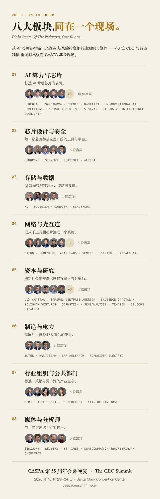
图29 八大板块，同在一个现场
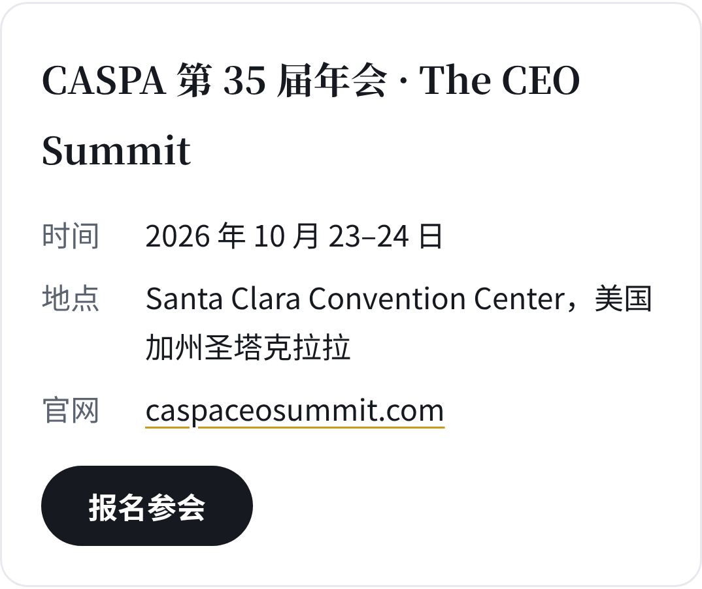
报名链接：点击报名（公众号中请放在“阅读原文”里） 官网：caspaceosummit.com
数据说明
- 统计口径。 月度销售额为三个月移动平均。2025 年全年销售额，2026 年 2 月的统计为 7,917 亿美元，7 月的产业报告修订为 7,956 亿美元，文中采用较新的数字。设备市场有两项口径不同的统计，2025 年的总额分别是 1,351 亿美元和 1,362 亿美元。53.4% 是总部在美国的企业，占全球全部半导体销售额的比例，不是设计业务的份额，也不是美国本土制造的份额。
- 机构估算与期间。 Counterpoint 与 TrendForce 的份额，是研究机构的估算，不是官方统计；图中的份额，期间为 2026 年二季度（封测为 2024 年）。公司的业绩，期间各不相同，文中均已写明。
- 公司自述。 ASML 的 EUV 工作原理与产品线、台积电的商业模式、三星 1992 年研发 64M DRAM、英伟达的供应链，来自公司自己的公开文件。
- 公司的预期。 ASML 2026 年约出货 65 台 EUV、中国市场约占全年销售额 20% 的表述，来自 2026 年 7 月 15 日的投资者电话会，是公司当时的预期；10 月 14 日公布的全年净销售额预期，以三季度新闻稿为准。
- 日本的材料份额。 硅片与光刻胶的份额来自日经 2025 年的市场份额调查，文中引用的是日经中文网 2026 年 7 月 31 日的报道（经 36 氪转载），尚未对照日经的原始数据。
- 封测。 封测环节采用 2024 年榜单；2025 年的榜单暂未查到。图中占比为前十大封测厂合计营收中的比例，并非占全球封测市场的比例。
- 估算值。 设备图中 ASML 的占比，是据 TechInsights 的市场总额和 ASML 营收估算的。
- 历史数据。 1980 年代日本的份额等历史数据，来自日本半导体历史馆的论述，各研究的口径差别较大，文中只采用“全球半导体市场份额”这一口径。
- H200 等出口政策。 2026 年 1 月 13 日的政策调整，以美国商务部工业与安全局的公告为准；“逐案审查”不等于自动放行或已经交付。
- 大基金。 三期的注册资本与 2025 年初的出资，来自 2025 年 1 月的报道，只代表报道当时的情况。
- Rapidus。 融资金额来自公司 2026 年 2 月 27 日的公告；2027 年量产是公司的目标，并非已经实现的结果。
参考资料及图片来源
检索与核对日期：2026 年 10 月 16 日。【一手】指公司、机构或组织自己发布的原始文件；【研究机构】指行业研究机构的公开报告页面。方括号编号对应正文。
[1] 【一手】美国半导体行业协会（SIA）副总裁 David Isaacs：在美国参议院财政委员会“关键供应链贸易”听证会上的书面证词，2025 年 5 月 14 日；1,000 至 1,500 道工序、跨越国境约 70 次以上、零部件行程超过 25,000 英里。<https://www.finance.senate.gov/download/051425-isaacs-testimony&download=1>
[2] 【一手】SIA：Year-to-Date Global Semiconductor Sales Top $1 Trillion Through August，2026 年 10 月 5 日；2026 年 8 月销售额、同比增速、年内累计、全年预期、各地区增速。https://www.semiconductors.org/year-to-date-global-semiconductor-sales-top-1-trillion-through-august/
[3] 【一手】SIA：2026 State of the Industry Report，2026 年 7 月 27 日；2025 年全球销售额 7,956 亿美元、美国总部企业 4,250 亿美元与 53.4% 的份额、研发投入 768 亿美元、AI 服务器机架芯片数量与价值占比。https://www.semiconductors.org/2026-state-of-the-industry-report-historic-growth-amid-intensifying-global-competition/
[4] ETHW（IEEE 工程与技术史 Wiki）：Bell Demonstrates Transistor，1947 年 12 月 23 日演示、1956 年诺贝尔物理学奖。https://ethw.org/Bell_Demonstrates_Transistor
[5] IEEE Spectrum：July 1958: Kilby Conceives the Integrated Circuit，基尔比 1958 年 7 月的构想、1959 年 2 月专利、诺伊斯 1959 年 1 月笔记。https://spectrum.ieee.org/july-1958-kilby-conceives-the-integrated-circuit
[6] Linda Hall Library：Gordon Moore，1965 年 4 月 19 日《电子学》文章、1975 年修订、1968 年创办英特尔。https://www.lindahall.org/gordon-moore/
[7] 吉尼斯世界纪录：First microprocessor，英特尔 4004、1971 年 11 月 15 日、2,300 个晶体管、设计者。https://www.guinnessworldrecords.com/world-records/first-microprocessor
[8] 计算机历史博物馆（Computer History Museum）：Who named Silicon Valley?，1971 年 1 月 11 日《电子新闻》唐·赫夫勒专栏。https://computerhistory.org/blog/who-named-silicon-valley/
[9] 日本半导体历史馆（Semiconductor History Museum of Japan）牧本次生文库：Rise and Fall of Japanese Semiconductors（Episode 20）；日本份额、1986 年协议、美国 1993 年反超、尔必达 1999 年成立。https://www.shmj.or.jp/makimoto/en/pdf/makimoto_E_01_20.pdf
[10] WGBH：Intel legends Moore and Grove: making it last，2012 年 4 月 6 日；1985 年英特尔决定退出存储业务。https://www.wgbh.org/news/2012-04-06/intel-legends-moore-and-grove-making-it-last
[11] 【研究机构】TechInsights：Top IC Manufacturing Equipment Suppliers in 2025；2025 年设备市场规模、ASML 营收与前五名。https://techinsights.com/blog/top-ic-manufacturing-equipment-suppliers-2025
[12] 【一手】SEMI：SEMI Reports Global Semiconductor Equipment Billings Reached $135 Billion in 2025, Up 15% Year-on-Year，2026 年 4 月 7 日（经 AAP 转发的新闻稿全文）；2025 年各地区设备销售额与增速。https://aapnews.aap.com.au/news/cision20260407AE27726
[13] 日经中文网：2025 年“主要商品和服务市场份额调查”报道，2026 年 7 月 31 日（经 36 氪转载）；硅片与光刻胶份额。https://eu.36kr.com/en/p/3918968758300292
[14] 【研究机构】TrendForce：2Q26 NAND Flash Top 5 Brands，2026 年 8 月 18 日；前五名营收与份额。https://www.trendforce.com/presscenter/news/20260818-13186.html
[15] 【一手】Rapidus：Rapidus Secures ¥267.6 Billion in Funding from Japan Government and Private Sector Companies，2026 年 2 月 27 日；融资总额、构成与 2027 年量产目标。https://www.rapidus.inc/news_topics/news-info/rapidus-secures-267-6-billion-yen-in-funding-from-japan-government-and-private-sector-companies-jp/
[16] 【一手】台积电：Company Profile；1987 年成立、创办人张忠谋、“开创纯晶圆代工商业模式”。https://www.tsmc.com/english/aboutTSMC/company_profile
[17] 【一手】Arm 官方博客：A brief history of Arm, part 1；1990 年 11 月成立、授权商业模式。https://developer.arm.com/community/arm-community-blogs/b/architectures-and-processors-blog/posts/a-brief-history-of-arm-part-1
[18] 【一手】NVIDIA Corporation：Form 10-K，截至 2026 年 1 月 25 日的财年；供应链描述。https://www.sec.gov/Archives/edgar/data/1045810/000104581026000021/nvda-20260125.htm
[19] 【研究机构】TrendForce：2Q26 Top 10 Foundry Ranking，2026 年 9 月 9 日。https://www.trendforce.com/presscenter/news/20260909-13225.html
[20] 【一手】台积电：Form 6-K，2026 年第二季度财报（提交美国证券交易委员会）；营收、各制程占晶圆收入比例、第三季度指引。https://www.sec.gov/Archives/edgar/data/0001046179/000104617926000451/a2q26e_withguidancexfinal.htm
[21] 【一手】三星电子官方历史：The world's first dual-deck VCR completed and massive Chinese production begins (1988–1992)；1992 年 8 月 64M DRAM。https://news.samsung.com/global/the-worlds-first-dual-deck-vcr-completed-and-massive-chinese-production-begins-1988-1992
[22] 【研究机构】Counterpoint Research：Global DRAM and HBM Market Share: Quarterly，2026 年第二季度，2026 年 9 月 2 日发布。https://counterpointresearch.com/insights/global-dram-and-hbm-market-share
[23] 【一手】ASML：History；1984 年成立，2010 年 EUV 原型机，2016 年 NXE:3400 订单，2020 年量产与第 100 台，2023 年首台 High-NA。https://www.asml.com/en/company/about-asml/history
[24] 【一手】ASML：EUV lithography systems；官方表述与产品型号。https://www.asml.com/en/products/euv-lithography-systems
[25] 【一手】ASML：Light & lasers（光刻原理）；锡滴、两次激光脉冲、每秒 50,000 次、13.5 纳米。https://www.asml.com/en/technology/lithography-principles/light-and-lasers
[26] 【一手】ASML：Transcript, Investor Call, Q2 2026 results，2026 年 7 月 15 日；系统销售、EUV 出货预期、中国占比、2027 年订单。https://ourbrand.asml.com/asset/1fd3908a-0381-47b5-9b69-a3094f656651/2026_07_15-ASML-Transcript-investor-call-Q2-2026.pdf
[27] 【一手】ASML：Form 6-K，2026 年第三季度业绩新闻稿（提交美国证券交易委员会），2026 年 10 月 14 日；净销售额、净利润、毛利率、2026 年全年预期与第四季度指引。https://www.sec.gov/Archives/edgar/data/0000937966/000162828026065813/pressreleasefinancialresul.htm
[28] 【一手】中芯国际（SMIC）：2026 年第二季度业绩公告（香港交易所披露易），2026 年 8 月 13 日；营收、同比与环比、毛利率、三季度指引。https://www1.hkexnews.hk/listedco/listconews/sehk/2026/0813/2026081300353.pdf
[29] 同花顺财经：大基金三期出手不凡 1600 亿元投资两只基金，2025 年 1 月 3 日；大基金三期注册资本 3,440 亿元、2024 年 5 月 24 日成立、2025 年初对两只基金的出资。https://news.10jqka.com.cn/20250103/c665132985.shtml
[30] 【一手】美国商务部工业与安全局（BIS）：Commerce Implements New Export Controls on Advanced Computing and Semiconductor Manufacturing Items to the PRC，2022 年 10 月 7 日。https://www.bis.gov/press-release/commerce-implements-new-export-controls-advanced-computing-semiconductor-manufacturing-items-peoples
[31] 【一手】美国商务部工业与安全局（BIS）：Department of Commerce Revises License Review Policy for Semiconductors Exported to China，2026 年 1 月 13 日；H200、MI325X 及类似芯片的逐案审查与条件。https://media.bis.gov/press-release/department-commerce-revises-license-review-policy-semiconductors-exported-china
[32] 【一手】NVIDIA：NVIDIA Announces Financial Results for Second Quarter Fiscal 2027，2026 年 8 月；营收、数据中心收入、三季度指引。https://nvidianews.nvidia.com/news/nvidia-announces-financial-results-for-second-quarter-fiscal-2027
[33] 【一手】SIA：Global Semiconductor Sales Increase 35.1% from Q1 2026 to Q2 2026，2026 年 8 月 6 日。https://www.semiconductors.org/global-semiconductor-sales-increase-35-1-from-q1-2026-to-q2-2026/
[34] 【一手】世界半导体贸易统计组织（WSTS）：Global Semiconductor Market records exceptional growth in Q2 2026；2026 年上半年市场规模、存储与逻辑增速。https://www.wsts.org/76/Global-Semiconductor-Market-records-exceptional-growth-in-Q2-2026
[35] 【一手】新思科技（Synopsys）：Synopsys Posts Financial Results for Fourth Quarter and Fiscal Year 2025，2025 年 12 月 10 日；2025 财年营收 70.54 亿美元，其中 Ansys 贡献 7.566 亿美元。https://news.synopsys.com/2025-12-10-Synopsys-Posts-Financial-Results-for-Fourth-Quarter-and-Fiscal-Year-2025
[36] 【一手】英特尔：Intel Appoints Lip-Bu Tan as Chief Executive Officer，2025 年 3 月 12 日发布，3 月 18 日生效。https://www.intel.com/content/www/us/en/newsroom/news/corporate/intel-appoints-lip-bu-tan-chief-executive-officer.html
[37] 【一手】CASPA CEO Summit 官网首页：35 年历史、6,000 多名个人会员、11 个分会。https://caspaceosummit.com/
[38] 【一手】CASPA CEO Summit 官网议程页：各场次的时间、题目与嘉宾。https://caspaceosummit.com/agenda/
[39] 【研究机构】TrendForce：Top 10 OSAT Companies of 2024，2025 年 5 月 13 日；2024 年封测厂商营收排名。https://www.trendforce.com/presscenter/news/20250513-12577.html
[40] 【公有领域】维基共享资源（Wikimedia Commons）：Bardeen Shockley Brattain 1948.JPG，AT&T 新闻照片，摄影师署名为纽约的 Jack St.（姓氏未能辨认）；晶体管三位发明者的合影。https://commons.wikimedia.org/wiki/File:Bardeen_Shockley_Brattain_1948.JPG
[41] 【一手】铿腾电子（Cadence）：Cadence Reports Fourth Quarter and Fiscal Year 2025 Financial Results，2026 年 2 月 17 日；2025 年营收 52.97 亿美元。https://investor.cadence.com/news/news-details/2026/Cadence-Reports-Fourth-Quarter-and-Fiscal-Year-2025-Financial-Results/default.aspx
[42] 【公有领域】维基共享资源（Wikimedia Commons）：ASML headquarters Veldhoven.jpg，摄影者 A. Ansems，2008 年 5 月 22 日。https://commons.wikimedia.org/wiki/File:ASML_headquarters_Veldhoven.jpg
[43] 日本半导体历史馆（Semiconductor History Museum of Japan）：Japan Semiconductor Innovation 50（D-8，1980 年代），东芝 1M DRAM 照片。https://www.shmj.or.jp/innovation50/english/detail_D08E.htm
[44] IEEE 工程与技术史 Wiki（ETHW）：Morris Chang，张忠谋 2011 年肖像。https://ethw.org/Morris_Chang
[45] 【一手】三星新闻中心（Samsung Global Newsroom）：[Photo Essay] An Intimate Look into Samsung's Semiconductor Operations (Part 1)，2017 年 11 月 10 日。https://news.samsung.com/global/photo-essay-an-intimate-look-into-samsungs-semiconductor-operations-part-1
[46] 凤凰网：大手笔！刚刚，中芯国际公告：投资超500亿元，文章配图。https://tech.ifeng.com/c/8IndklkUjO7
[47] 【一手】英特尔博物馆：戈登·摩尔，Cramming more components onto integrated circuits，《电子学》，1965 年 4 月 19 日（原文扫描件）。https://download.intel.com/sites/channel/museum/Moores_Law/Articles-Press_Releases/Gordon_Moore_1965_Article.pdf
[48] 【一手】台积电：3Q26 业绩简报（提交美国证券交易委员会），2026 年 10 月 15 日；第三季度营收、同比环比增速、第四季度指引。https://www.sec.gov/Archives/edgar/data/1046179/000104617926000726/a3q26presentatione.htm
延伸阅读：Chris Miller，*Chip War: The Fight for the World's Most Critical Technology*（Scribner，2022）。